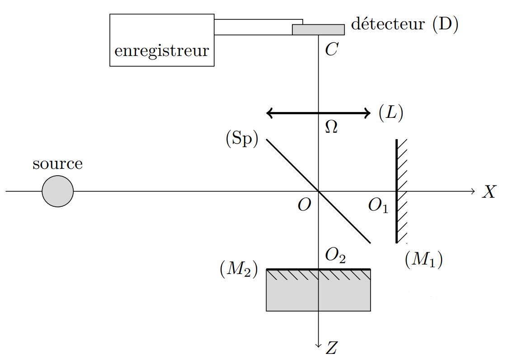

PrepOral
[MP] [Centrale] [2012]
Détermination de g avec un interféromètre de Michelson
Enoncé
Un interféromètre de Michelson est éclairé par une source monochromatique de longueur d'onde $\lambda=632,8$ nm centrée sur l'axe \(OX\). On note \(\ell_i\) la longueur \(OO_i\) entre le centre $O$ et le miroir $i$, et $e=\ell_2-\ell_1$ la différence de ces longueurs. \((L)\) est enfin une lentille convergente de centre optique \(\Omega\) et de distance focale $f'=1,0$ m.
1. Quel type de configuration reconnaissez-vous pour l'interféromètre de Michelson ? A quelle distance \(\Omega C\) doit se trouver le détecteur \((D)\) pour observer correctement la figure d'interférences ?

Le miroir $\mathcal{M}_2$ est solidaire d'un mobile astreint à se déplacer en translation selon \(OZ\). Ce mobile est lâché en chute libre, sans vitesse initiale, à $t=0$. On considère que le Michelson présente la position du contact optique à $t=0$. Le graphe suivant représente l'éclairement au point \(C\) en fonction du temps.
2. Estimer la valeur du champ de pesanteur terrestre $g$.
Commentaires
[MP Chaptal 2024] Le cours est su. La configuration du Michelson et l'intérêt d'une lentille de projection sont maitrisés. Le temps n'a pas permis d'aller jusqu'à la résolution, mais une discussion informelle en fin de khôlle a permis de vérifier la méthode de résolution, au moins sur les étapes d'expression de la ddm et de l'éclairement à partir de la formule de FRESNEL.
[MP* Chaptal 2024] Le cours est su. Très bien mené, malgré une difficulté à appliquer les formules pour le cas précis de l'exercice : la ddm ne dépend pas de l'angle d'incidence du rayon par rapport à l'axe optique, puisqu'on considère uniquement l'éclairement sur l'axe optique. Lecture peut-être trop rapide de l'énoncé. Trouve une valeur aberrante pour g, puisqu'il a cherché à le déterminer à partir d'une seule valeur sur le graphe qui n'était même pas un extremum. N'a pas eu le réflexe d'une régression linéaire sur les maxima (ou minima), mais en a compris immédiatement l'intérêt et savait l'effectuer. L'exercice était sur le point d'être terminé.